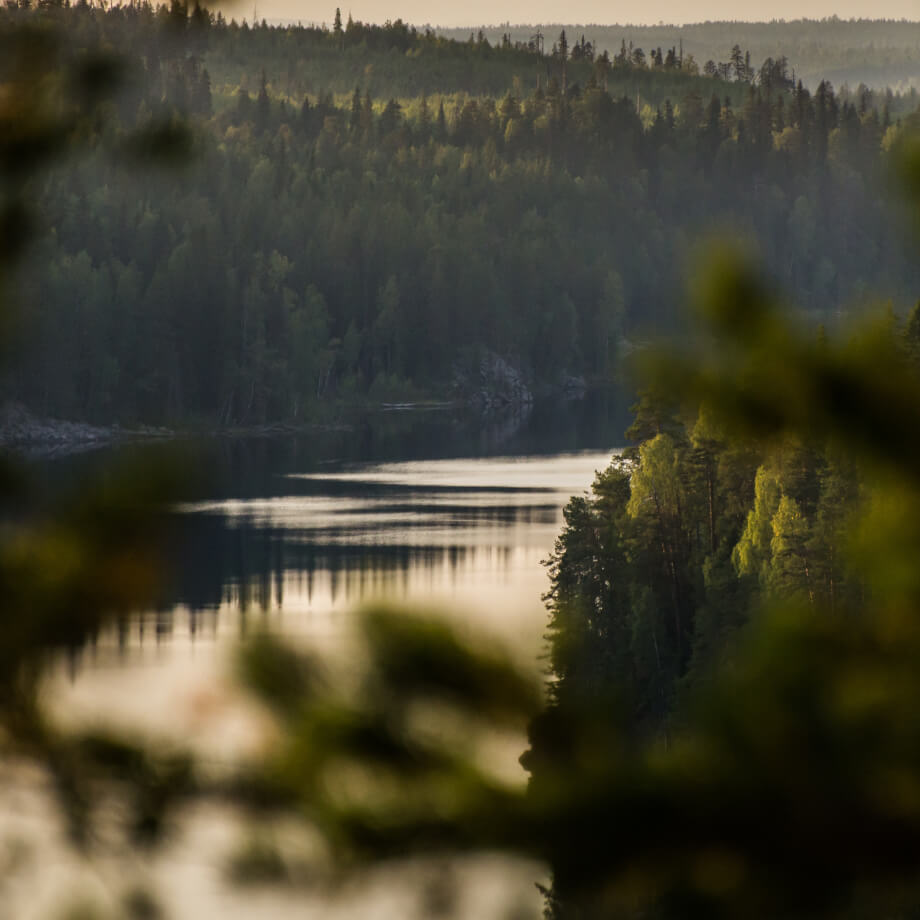

Traveling in Russia
The real country is not in the news, but here.

the upper bunk is yours
What haven’t we seen already?
According to VCIOM (Russian Public Opinion Research Center) polls, 95% of Russians dream of going somewhere, but only 36% plan to spend their holidays in their own country. Like, what have we not seen here at home? In fact, Russia is a whole universe with the gentle sea of the south, the dense forests of the Sayans and the harsh ice of the Putorana Plateau. And you can see all these beauties without millions of rubles in your account, a visa and many hours of flights. Like, for example, Vera Bashmakova, a brave young mother who took three children in her arms, put them in her Lada and drove 20 thousand kilometers across her own country. We have selected and described some interesting places worthy of your vacation.
- Time zones 11
- UNESCO natural heritage sites 12
- UNESCO cultural heritage sites 16
- Nature reserves 105
- Airports 241
Curonian Spit

Here, in the middle of forests and sand dunes, you can see two water horizons — the calm Curonian Lagoon on one side and the rippling waves of the Baltic Sea on the other. A unique natural area on the edge of the Russian enclave.
The Kaliningrad region does not end there. For a traveler and researcher, there is the westernmost point of Russia, the Baltic Spit, and the German heritage of a scattering of small seaside towns in the same neighborhood. The atmosphere of those places eliminates the fuss, dipping into the tranquility of nature and the smell of steel cool sea.
Kola Peninsula

Almost the entire peninsula is located beyond the Arctic Circle. The Saami tundra, from which to the south is the taiga, and to the north is the Arctic Ocean, pretending to be the Barents Sea.
Perhaps you watched Zvyagintsev’s movie and even heard the story of the Arctic festival in Teriberka. Perhaps the word «Khibiny» did not remain under the snow of school memories of geography lessons. Perhaps you were not interested in the Kola Superdeep Borehole penetrating the earth’s crust, and because of apatites apathy has long ago appeared. But your dream of seeing the northern lights comes true with a ticket to Murmansk.
Altai

Altai is one of the most beautiful places in Russia. First of all, because of the mountains: if you drive along the ridge, you will see slopes studded with pine trees, mountain rivers and lakes. And if you open the windows in the car, you can get acquainted with the invisible miracle of those places — the mountain air.
The climate in Altai is temperate, so it is best to go here in summer. So you will see all the variety of local flora and fauna. Mooses roam the forests of Altai, eagles fly over the ridges, and roe deers graze on the plains. And the famous manuls are also inhabitants of the Altai Territory.
Baikal in winter

Everyone knows Baikal as the largest lake in the world. Many also know that this is the largest source of fresh water and one of the most beautiful places in Russia.
Of course, it’s all true. But Baikal is still an ideal place for skijoring. This is a sport where a skier ties himself to a motorcycle and the tandem tries to develop as much speed as possible on the ice. In March 2019, a world record was set at the Baikal Mile festival — 197.011 km/h.
Karelia

Siberia ends not in the Urals, but in Karelia: the Siberian larch that forms the taiga does not grow west of the Vodlozero. But here it grows up to 30 meters — the forests of the Karelian national parks, due to impenetrable swamps, have never seen an ax. Some pines are more than half a millennium old. Touch a living creature that saw the sun before Ivan the Terrible saw it. In the virgin forest you will hardly find a path. And on rare paths, trees a couple of meters from the ground are marked with bear claws. Let everyone know who’s boss here.